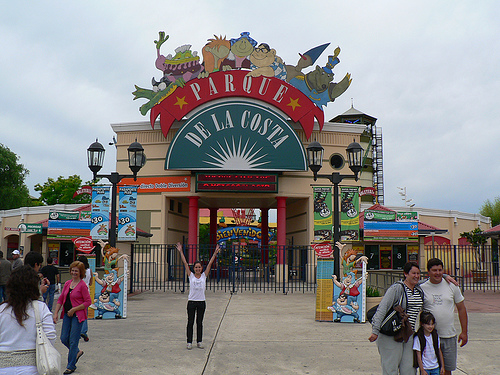

Parque de La Costa
El Parque de la Costa es un parque de atracciones ubicado en la ciudad de Tigre, Provincia de Buenos Aires, Argentina. Es uno de los más importantes del país. Está ubicado sobre un predio de catorce hectáreas que se encuentra entre los ríos Luján y Tigre.